Quality control
Last updated: 2019-03-05
workflowr checks: (Click a bullet for more information)-
✔ R Markdown file: up-to-date
Great! Since the R Markdown file has been committed to the Git repository, you know the exact version of the code that produced these results.
-
✔ Environment: empty
Great job! The global environment was empty. Objects defined in the global environment can affect the analysis in your R Markdown file in unknown ways. For reproduciblity it’s best to always run the code in an empty environment.
-
✔ Seed:
set.seed(20190110)The command
set.seed(20190110)was run prior to running the code in the R Markdown file. Setting a seed ensures that any results that rely on randomness, e.g. subsampling or permutations, are reproducible. -
✔ Session information: recorded
Great job! Recording the operating system, R version, and package versions is critical for reproducibility.
-
Great! You are using Git for version control. Tracking code development and connecting the code version to the results is critical for reproducibility. The version displayed above was the version of the Git repository at the time these results were generated.✔ Repository version: 1b07d72
Note that you need to be careful to ensure that all relevant files for the analysis have been committed to Git prior to generating the results (you can usewflow_publishorwflow_git_commit). workflowr only checks the R Markdown file, but you know if there are other scripts or data files that it depends on. Below is the status of the Git repository when the results were generated:
Note that any generated files, e.g. HTML, png, CSS, etc., are not included in this status report because it is ok for generated content to have uncommitted changes.Ignored files: Ignored: .DS_Store Ignored: .Rhistory Ignored: .Rproj.user/ Ignored: ._.DS_Store Ignored: analysis/cache/ Ignored: build-logs/ Ignored: data/ Ignored: output/.DS_Store Ignored: output/._.DS_Store Ignored: output/03-clustering/selected_genes.csv.zip Ignored: output/04-marker-genes/de_genes.csv.zip Ignored: packrat/.DS_Store Ignored: packrat/._.DS_Store Ignored: packrat/lib-R/ Ignored: packrat/lib-ext/ Ignored: packrat/lib/ Ignored: packrat/src/ Untracked files: Untracked: output/05-paga/parameters.json Untracked: output/06-velocyto/parameters.json Untracked: output/90-methods/ Untracked: workflowr-build.e2538443 Untracked: workflowr-build.e2545370 Untracked: workflowr-build.o2538443 Untracked: workflowr-build.o2545370 Unstaged changes: Modified: analysis/_site.yml Modified: env-velocyto.yml Modified: output/01-preprocessing/parameters.json Modified: output/01B-alevin/alevin-comparison.pdf Modified: output/01B-alevin/parameters.json Modified: output/02-quality-control/parameters.json Modified: output/02-quality-control/qc-thresholds.pdf Modified: output/02-quality-control/qc-validation.pdf Modified: output/03-clustering/cluster-comparison.pdf Modified: output/03-clustering/cluster-validation.pdf Modified: output/03-clustering/cluster_assignments.tsv.gz Modified: output/03-clustering/cluster_expression.tsv.gz Modified: output/03-clustering/gene-selection.pdf Modified: output/03-clustering/parameters.json Modified: output/03-clustering/resolution-selection.pdf Modified: output/04-marker-genes/de-results.pdf Modified: output/04-marker-genes/de_genes.xlsx Modified: output/04-marker-genes/parameters.json Modified: output/05-paga/cell_edges.csv Modified: output/05-paga/cell_embedding.csv Modified: output/05-paga/cluster_edges.csv Modified: output/05-paga/cluster_embedding.csv Modified: output/05-paga/cluster_tree_edges.csv Modified: output/05-paga/paga-results.pdf Modified: output/06-velocyto/cell-velocity.pdf Modified: scripts/build.pbs
Expand here to see past versions:
| File | Version | Author | Date | Message |
|---|---|---|---|---|
| Rmd | 1b07d72 | Luke Zappia | 2019-03-05 | Add methods page |
| html | 52e85ed | Luke Zappia | 2019-02-23 | Add quality control figures |
| Rmd | 8f826ef | Luke Zappia | 2019-02-08 | Rebuild site and tidy |
| html | 8f826ef | Luke Zappia | 2019-02-08 | Rebuild site and tidy |
| Rmd | 2daa7f2 | Luke Zappia | 2019-01-25 | Improve output and rebuild |
| html | 2daa7f2 | Luke Zappia | 2019-01-25 | Improve output and rebuild |
| Rmd | 71b3dcc | Luke Zappia | 2019-01-23 | Add quality control |
| html | 71b3dcc | Luke Zappia | 2019-01-23 | Add quality control |
# scRNA-seq
library("SingleCellExperiment")
library("scater")
library("scran")
# RNA-seq
library("edgeR")
# Plotting
library("cowplot")
library("gridExtra")
# Tidyverse
library("tidyverse")source(here::here("R/plotting.R"))
source(here::here("R/output.R"))sel_path <- here::here("data/processed/01-selected.Rds")bpparam <- BiocParallel::MulticoreParam(workers = 10)Introduction
In this document we are going to explore the dataset and filter it to remove low quality cells and lowly expressed genes using the scater and scran packages. The goal is to have a high quality dataset that can be used for further analysis.
if (file.exists(sel_path)) {
selected <- read_rds(sel_path)
} else {
stop("Selected dataset is missing. ",
"Please run '01-preprocessing.Rmd' first.",
call. = FALSE)
}
set.seed(1)
sizeFactors(selected) <- librarySizeFactors(selected)
selected <- normalize(selected)
selected <- runPCA(selected, method = "irlba")
selected <- runTSNE(selected)
selected <- runUMAP(selected)
cell_data <- as.data.frame(colData(selected))
feat_data <- as.data.frame(rowData(selected))Exploration
We will start off by making some plots to explore the dataset.
Expression by cell
Distributions by cell. Blue line shows the median and red lines show median absolute deviations (MADs) from the median.
Total counts
outlierHistogram(cell_data, "log10_total_counts", mads = 1:6)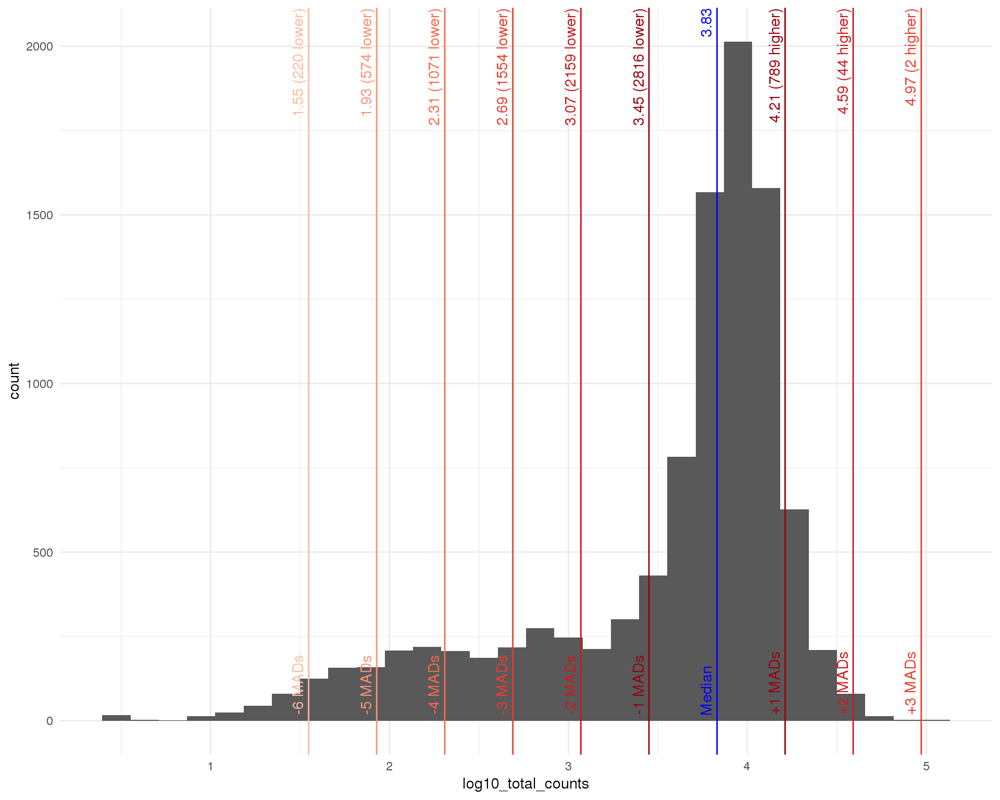
Total features
outlierHistogram(cell_data, "log10_total_features_by_counts", mads = 1:6)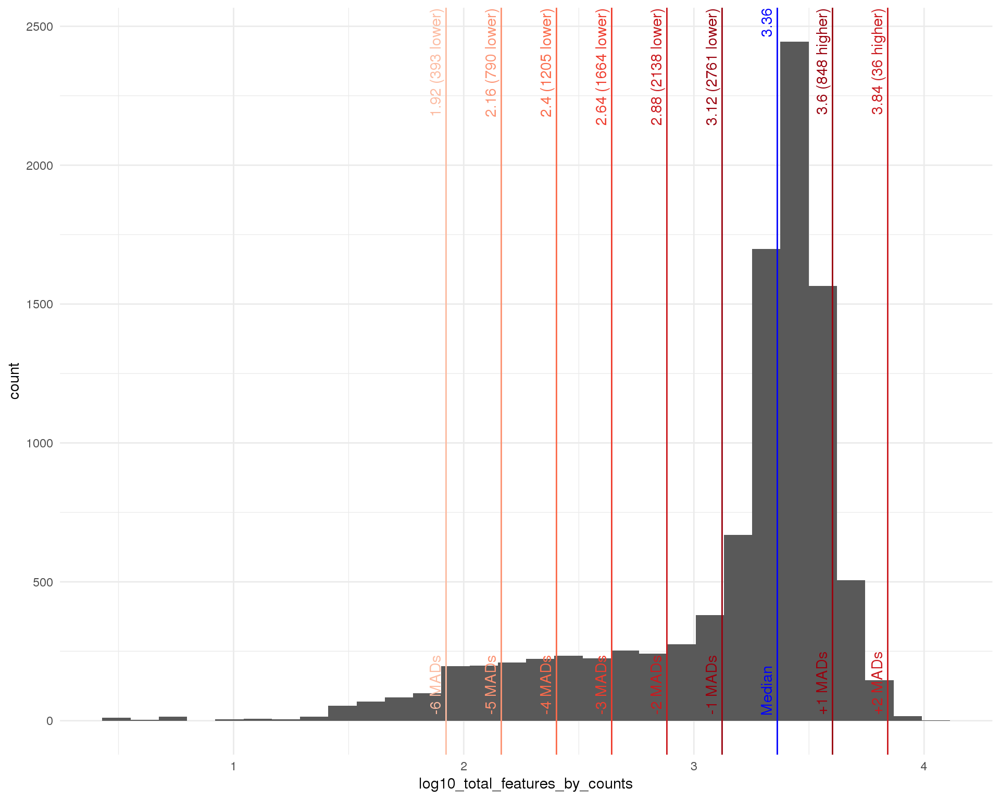
Dimensionality reduction
Dimensionality reduction plots coloured by technical factors can help identify which may be playing a bit role in the dataset.
dimred_factors <- c(
"Sample" = "Sample",
"Total counts" = "log10_total_counts",
"CellCycle" = "CellCycle",
"Total features" = "log10_total_features_by_counts",
"Mitochondrial genes" = "pct_counts_MT",
"Selection method" = "SelMethod"
)PCA
plot_list <- lapply(names(dimred_factors), function(fct_name) {
plotPCA(selected, colour_by = dimred_factors[fct_name],
shape_by = "Sample", add_ticks = FALSE) +
ggtitle(fct_name)
})
plot_grid(plotlist = plot_list, ncol = 2)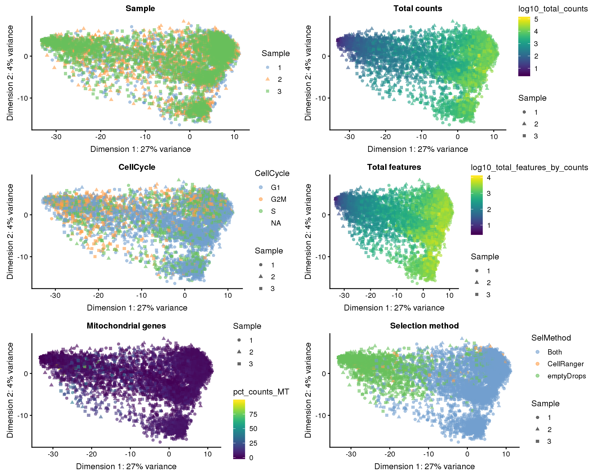
t-SNE
plot_list <- lapply(names(dimred_factors), function(fct_name) {
plotTSNE(selected, colour_by = dimred_factors[fct_name],
shape_by = "Sample", add_ticks = FALSE) +
ggtitle(fct_name)
})
plot_grid(plotlist = plot_list, ncol = 2)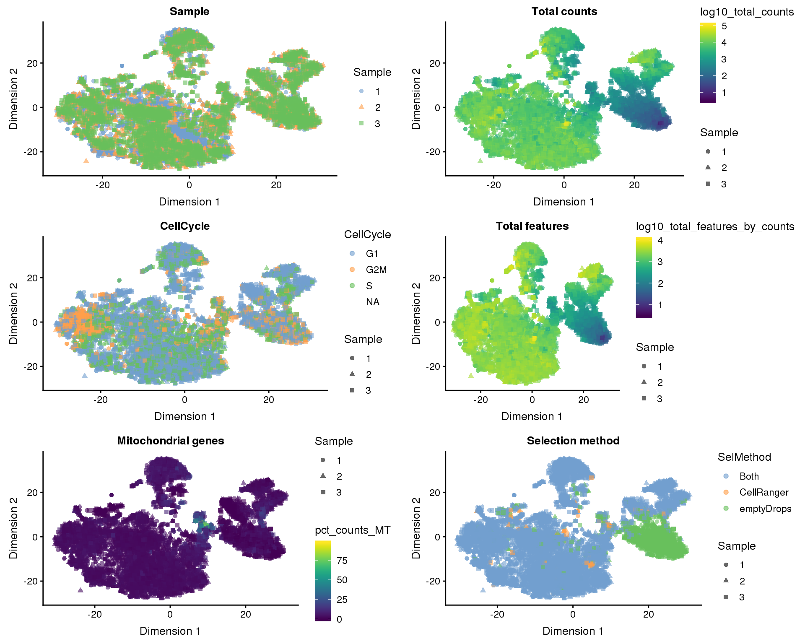
UMAP
plot_list <- lapply(names(dimred_factors), function(fct_name) {
plotUMAP(selected, colour_by = dimred_factors[fct_name],
shape_by = "Sample", add_ticks = FALSE) +
ggtitle(fct_name)
})
plot_grid(plotlist = plot_list, ncol = 2)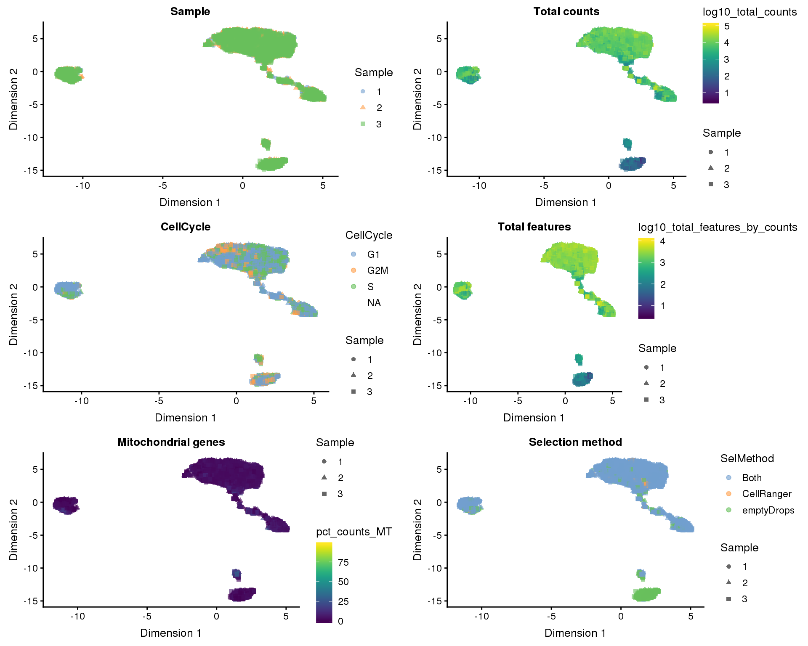
Explanatory variables
This plot shows the percentage of variance in the dataset that is explained by various technical factors.
exp_vars <- c("Sample", "CellCycle", "SelMethod", "log10_total_counts",
"pct_counts_in_top_100_features", "total_features_by_counts",
"pct_counts_MT")
all_zero <- Matrix::rowSums(counts(selected)) == 0
plotExplanatoryVariables(selected[!all_zero, ], variables = exp_vars)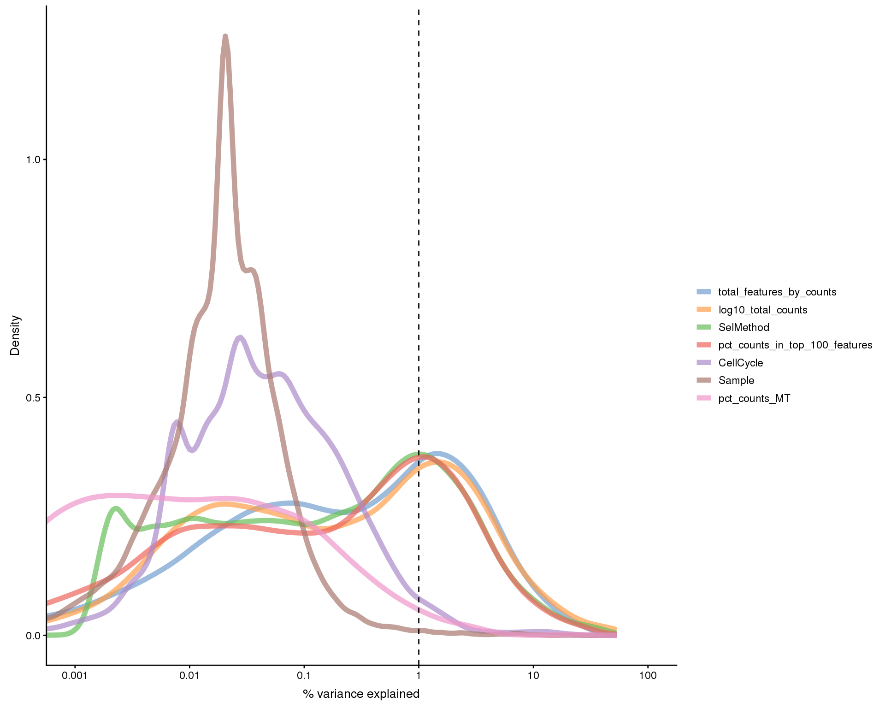
Expand here to see past versions of exp-vars-1.png:
| Version | Author | Date |
|---|---|---|
| 52e85ed | Luke Zappia | 2019-02-23 |
| 8f826ef | Luke Zappia | 2019-02-08 |
| 2daa7f2 | Luke Zappia | 2019-01-25 |
| 71b3dcc | Luke Zappia | 2019-01-23 |
Here we see that factors associated with the number of counts and features in each cell represent large sources of variation.
Cell cycle
The dataset has already been scored for cell cycle activity. This plot shows the G2/M score against the G1 score for each cell and let’s us see the balance of cell cycle phases in the dataset.
ggplot(cell_data,
aes(x = G1Score, y = G2MScore, colour = CellCycle, shape = Sample)) +
geom_point() +
xlab("G1 score") +
ylab("G2/M score") +
theme_minimal()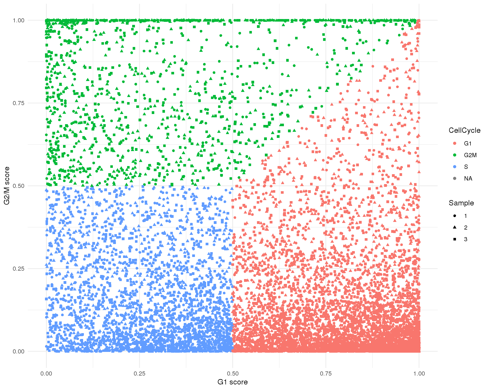
Expand here to see past versions of cell-cycle-1.png:
| Version | Author | Date |
|---|---|---|
| 52e85ed | Luke Zappia | 2019-02-23 |
| 8f826ef | Luke Zappia | 2019-02-08 |
| 2daa7f2 | Luke Zappia | 2019-01-25 |
| 71b3dcc | Luke Zappia | 2019-01-23 |
knitr::kable(table(Phase = cell_data$CellCycle, useNA = "ifany"))| Phase | Freq |
|---|---|
| G1 | 5721 |
| G2M | 1371 |
| S | 2701 |
| NA | 209 |
Expression by gene
Distributions by cell. Blue line shows the median and red lines show median absolute deviations (MADs) from the median. We show distributions for all genes and those that have at least one count.
Mean
outlierHistogram(feat_data, "log10_mean_counts", mads = c(10, 20))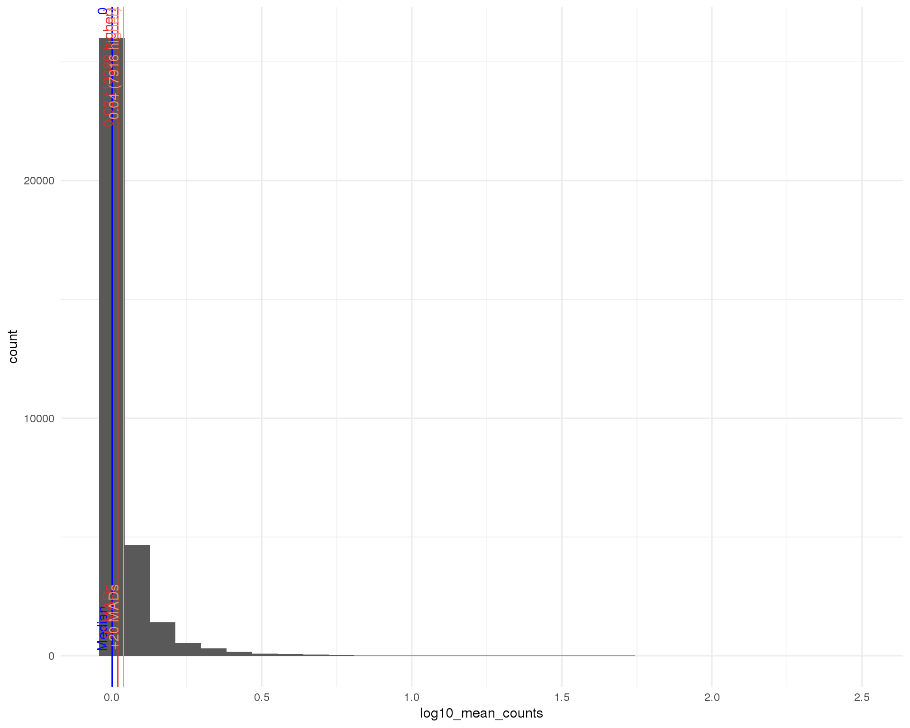
Total
outlierHistogram(feat_data, "log10_total_counts", mads = 1:5)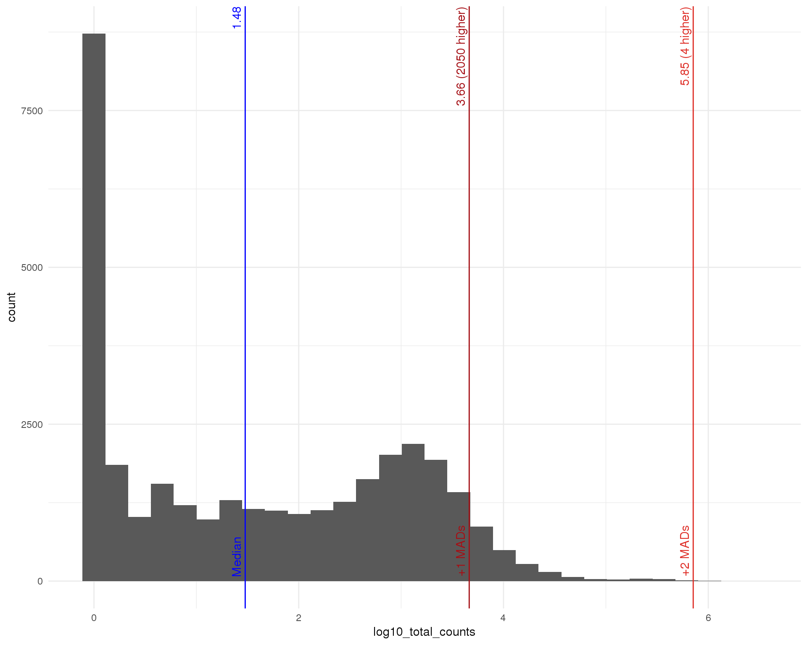
Mean (expressed)
outlierHistogram(feat_data[feat_data$total_counts > 0, ],
"log10_mean_counts", mads = c(10, 20))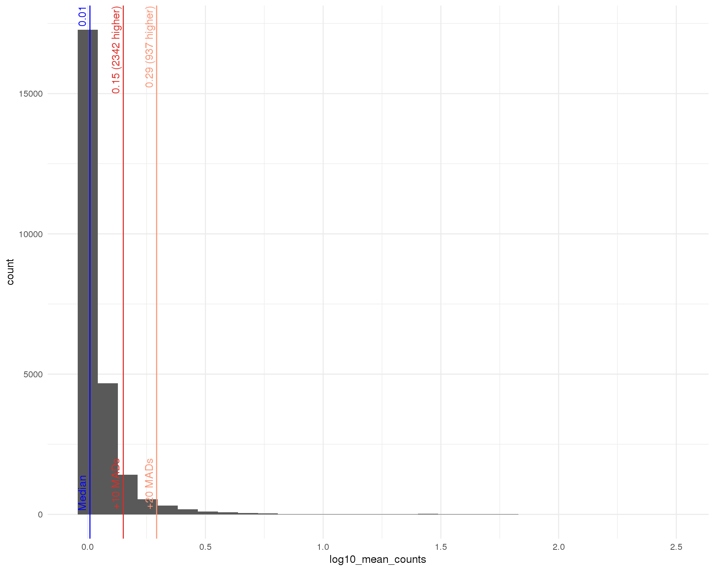
Total (expressed)
outlierHistogram(feat_data[feat_data$total_counts > 0, ],
"log10_total_counts", mads = 1:5)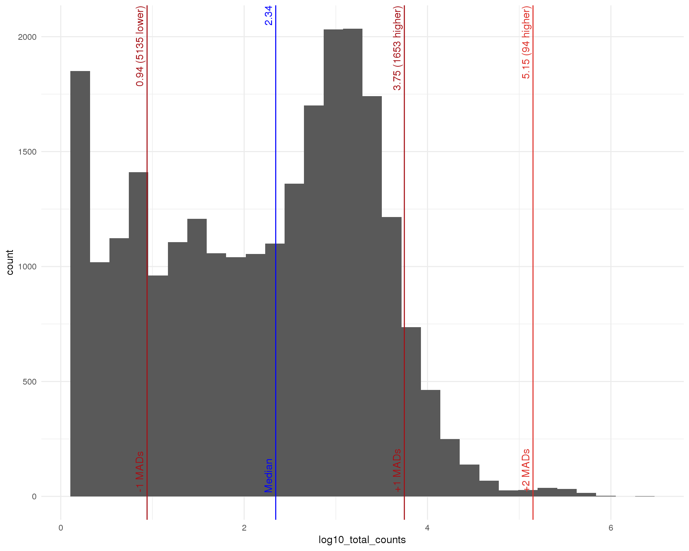
High expression genes
We can also look at the expression levels of just the top 50 most expressed genes.
plotHighestExprs(selected)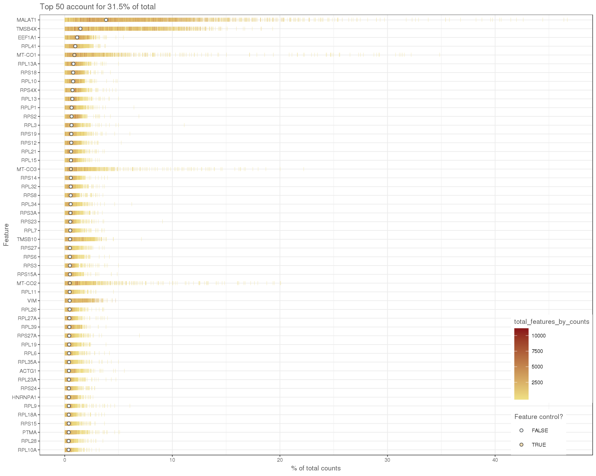
Expand here to see past versions of high-exprs-1.png:
| Version | Author | Date |
|---|---|---|
| 52e85ed | Luke Zappia | 2019-02-23 |
| 8f826ef | Luke Zappia | 2019-02-08 |
| 2daa7f2 | Luke Zappia | 2019-01-25 |
| 71b3dcc | Luke Zappia | 2019-01-23 |
As is typical for 10x experiments we see that many of these are ribosomal proteins.
Expression frequency
The relationshop between the number of cells that express a gene and the overall expression level can also be interesting. We expect to see that higher expressed genes are expressed in more cells but there will also be some that stand out from this.
Frequency by mean
plotExprsFreqVsMean(selected, controls = NULL)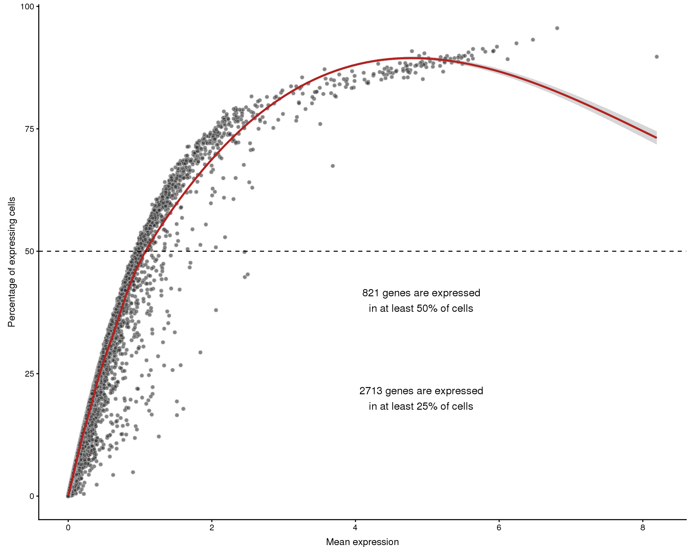
Zeros by total counts
ggplot(feat_data,
aes(x = log10_total_counts, y = 1 - n_cells_by_counts / nrow(selected),
colour = gene_biotype)) +
geom_point(alpha = 0.2, size = 1) +
scale_y_continuous(labels = scales::percent) +
xlab("log(total counts)") +
ylab("Percentage zeros")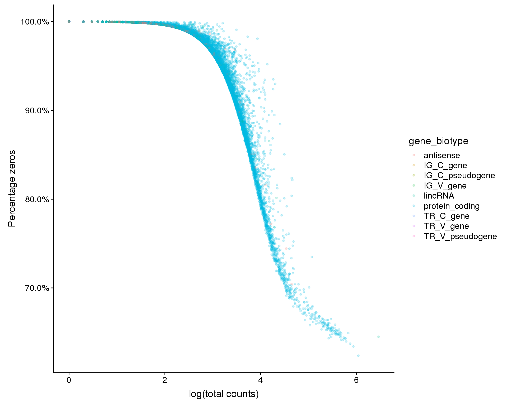
Cell filtering
We will now perform filtering to select high quality cells. Before we start we have 10002 cells.
Manual outliers
The simplest filtering method is to set thresholds on some of the factors we have explored. Specifically these are the total number of counts per cell, the number of features expressed in each cell and the percentage of counts assigned to genes on the mitochondrial chromosome which is used as a proxy for cell damage. The selected thresholds and numbers of filtered cells using this method are:
counts_mads <- 4
features_mads <- 4
mt_mads <- 4
counts_out <- isOutlier(cell_data$log10_total_counts,
nmads = counts_mads, type = "lower")
features_out <- isOutlier(cell_data$log10_total_features_by_counts,
nmads = features_mads, type = "lower")
mt_out <- isOutlier(cell_data$pct_counts_MT,
nmads = mt_mads, type = "higher")
counts_thresh <- attr(counts_out, "thresholds")["lower"]
features_thresh <- attr(features_out, "thresholds")["lower"]
mt_thresh <- attr(mt_out, "thresholds")["higher"]
kept_manual <- !(counts_out | features_out | mt_out)
colData(selected)$KeptManual <- kept_manual
manual_summ <- tibble(
Type = c(
"Total counts",
"Total features",
"Mitochondrial %",
"Kept (manual)"
),
Threshold = c(
paste("< 10 ^", round(counts_thresh, 2)),
paste("< 10 ^", round(features_thresh, 2)),
paste(">", round(mt_thresh, 2)),
""
),
Count = c(
sum(counts_out),
sum(features_out),
sum(mt_out),
sum(kept_manual)
)
)
knitr::kable(manual_summ)| Type | Threshold | Count |
|---|---|---|
| Total counts | < 10 ^ 2.31 | 1071 |
| Total features | < 10 ^ 2.37 | 1323 |
| Mitochondrial % | > 8.24 | 598 |
| Kept (manual) | 8186 |
PCA outliers
An alternative approach is to perform a PCA using technical factors instead of gene expression and then use outlier detection to identify low-quality cells. This has the advantage of being an automated process but is difficult to interpret and may be affected if there are many low-quality cells.
selected <- runPCA(selected, use_coldata = TRUE, detect_outliers = TRUE)
plotReducedDim(selected, use_dimred = "PCA_coldata", colour_by = "outlier",
add_ticks = FALSE)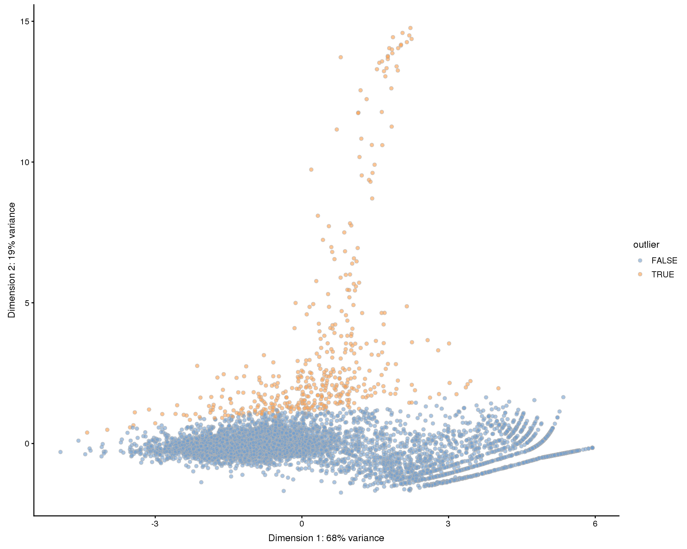
Expand here to see past versions of pca-outliers-1.png:
| Version | Author | Date |
|---|---|---|
| 52e85ed | Luke Zappia | 2019-02-23 |
| 8f826ef | Luke Zappia | 2019-02-08 |
| 2daa7f2 | Luke Zappia | 2019-01-25 |
| 71b3dcc | Luke Zappia | 2019-01-23 |
kept_pca <- !colData(selected)$outlier
colData(selected)$KeptPCA <- kept_pca
pca_summ <- tibble(
Type = c(
"PCA",
"Kept (PCA)"
),
Count = c(
sum(!kept_pca),
sum(kept_pca)
)
)
knitr::kable(pca_summ)| Type | Count |
|---|---|
| PCA | 434 |
| Kept (PCA) | 9568 |
Outlier summary
kept_both <- kept_manual & kept_pca
colData(selected)$Kept <- "False"
colData(selected)$Kept[kept_manual] <- "Manual"
colData(selected)$Kept[kept_pca] <- "PCA"
colData(selected)$Kept[kept_both] <- "Both"The manual method has identified 8186 high-quality cells and the PCA method identified 9568. If we combine both methods we get 8186 cells. We can look at which cells each method identified on our dimensionality reduction plots.
out_factors <- c(
"Kept" = "Kept",
"Total counts" = "log10_total_counts",
"Total features" = "log10_total_features_by_counts",
"Mitochondrial genes" = "pct_counts_MT"
)PCA
plot_list <- lapply(names(out_factors), function(fct_name) {
plotPCA(selected, colour_by = out_factors[fct_name],
shape_by = "Sample", add_ticks = FALSE) +
ggtitle(fct_name)
})
plot_grid(plotlist = plot_list, ncol = 2)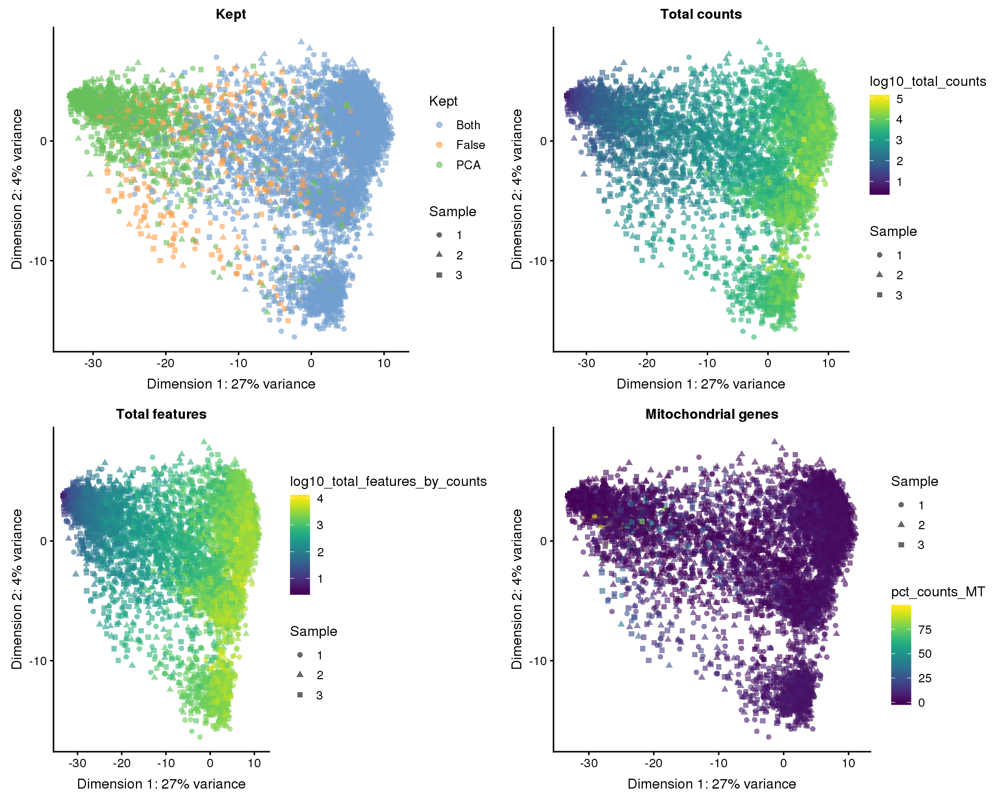
t-SNE
plot_list <- lapply(names(out_factors), function(fct_name) {
plotTSNE(selected, colour_by = out_factors[fct_name],
shape_by = "Sample", add_ticks = FALSE) +
ggtitle(fct_name)
})
plot_grid(plotlist = plot_list, ncol = 2)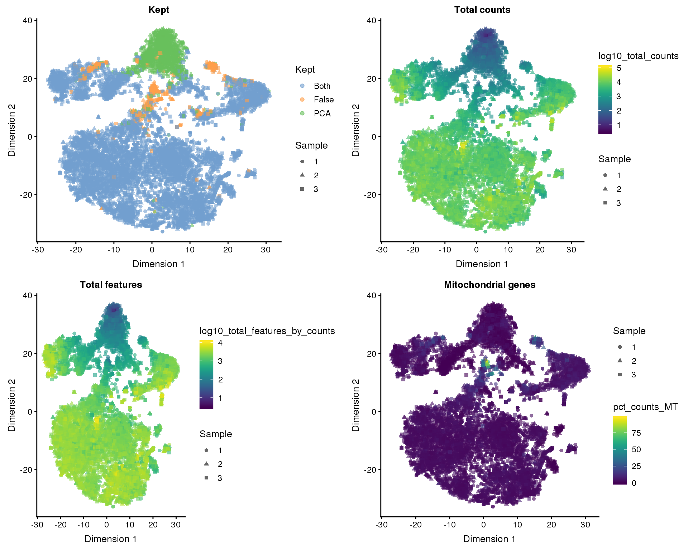
UMAP
plot_list <- lapply(names(out_factors), function(fct_name) {
plotUMAP(selected, colour_by = out_factors[fct_name],
shape_by = "Sample", add_ticks = FALSE) +
ggtitle(fct_name)
})
plot_grid(plotlist = plot_list, ncol = 2)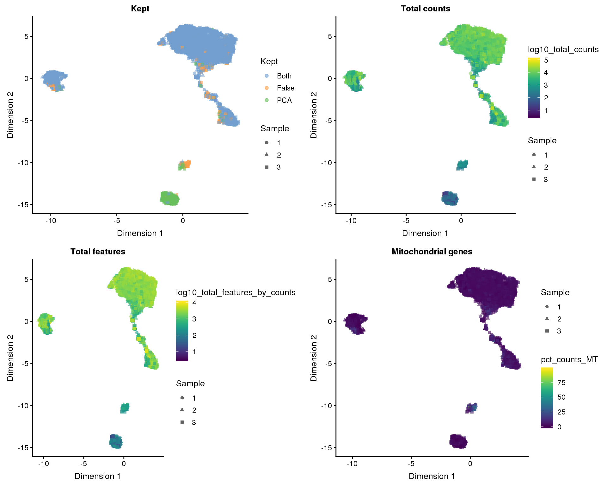
Filter
We are going to use the manual filtering as it is easier to interpret and adjust.
filtered <- selected[, kept_manual]
set.seed(1)
sizeFactors(filtered) <- librarySizeFactors(filtered)
filtered <- normalize(filtered)
filtered <- runPCA(filtered, method = "irlba")
filtered <- runTSNE(filtered)
filtered <- runUMAP(filtered)Our filtered dataset now has 8186 cells.
Doublets
One kind of low-quality cell we have not yet considered are doubletes where two cells are captured in the same droplet. We expect doublets to have at least the normal amount of RNA so they won’t be captured by our previous filters. To identify them we will use a method that simulates doublets by combining cells and then checks the neighbourhood of cells to see if they are near simulated doublets. This gives us a doublet score for each cell.
set.seed(1)
doublet_scores <- doubletCells(filtered, approximate = TRUE, BPPARAM = bpparam)
colData(filtered)$DoubletScore <- doublet_scoresPlots
PCA
plotPCA(filtered, colour_by = "DoubletScore", add_ticks = FALSE)
t-SNE
plotTSNE(filtered, colour_by = "DoubletScore", add_ticks = FALSE)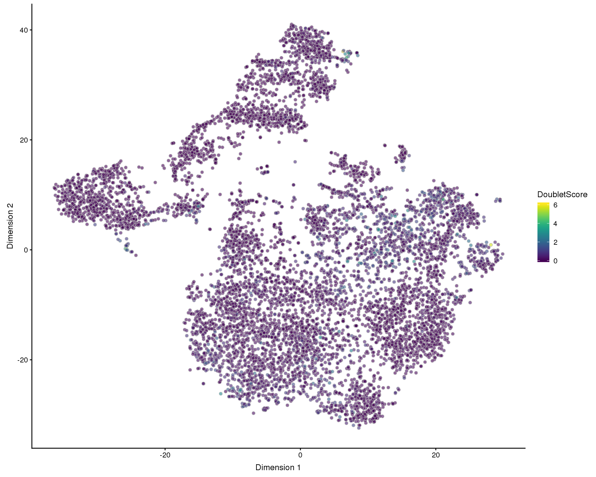
UMAP
plotUMAP(filtered, colour_by = "DoubletScore", add_ticks = FALSE)
Histogram
outlierHistogram(as.data.frame(colData(filtered)), "DoubletScore",
mads = c(1, 3, 5, 7, 9, 11, 13, 15))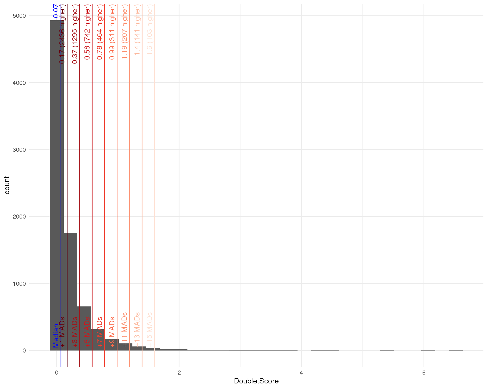
Filter
doublet_out <- isOutlier(doublet_scores, nmads = 15, type = "higher")
doublet_thresh <- attr(doublet_out, "thresholds")["higher"]
filtered <- filtered[, !doublet_out]We choose a threshold for the doublet score that removes around the number of cells as the expected doublet frequency for a 10x experiment (around 1 percent). A threshold of 1.56 identifies 127 doublets leaving us with 8059 cells.
Gene filtering
We also want to perform som filtering of features to remove lowly expressed genes that increase the computation required and may not meet the assumptions of some methods. Let’s look as some distributions now that we have removed low-quality cells.
Distributions
Average counts
avg_counts <- calcAverage(filtered, use_size_factors = FALSE)
rowData(filtered)$AvgCount <- avg_counts
rowData(filtered)$Log10AvgCount <- log10(avg_counts)
outlierHistogram(as.data.frame(rowData(filtered)), "Log10AvgCount",
mads = 1:3, bins = 100)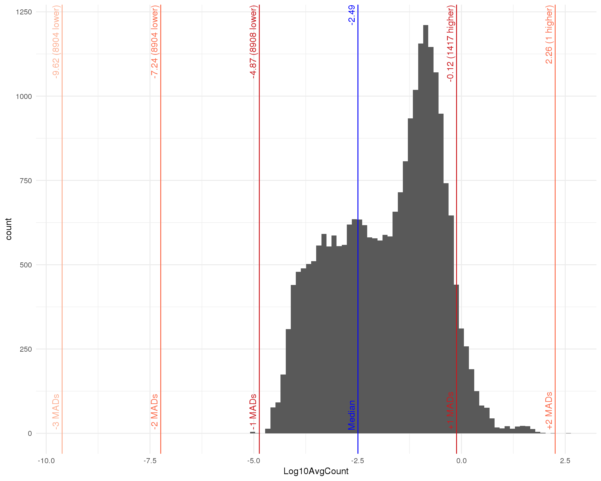
Number of cells
outlierHistogram(as.data.frame(rowData(filtered)), "n_cells_by_counts",
mads = 1:3, bins = 100) +
scale_x_log10()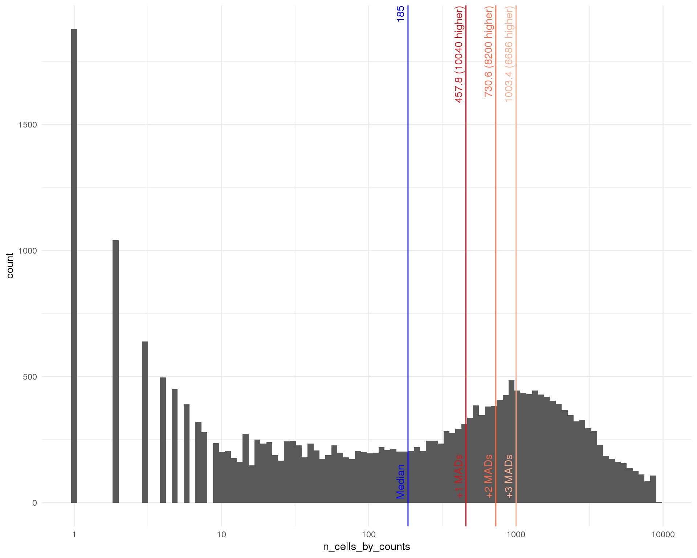
Filter
min_count <- 1
min_cells <- 2
keep <- Matrix::rowSums(counts(filtered) >= min_count) >= min_cells
set.seed(1)
filtered <- filtered[keep, ]
sizeFactors(filtered) <- librarySizeFactors(filtered)
filtered <- normalize(filtered)
filtered <- runPCA(filtered, method = "irlba")
filtered <- runTSNE(filtered)
filtered <- runUMAP(filtered)We use a minimal filter that keeps genes with at least 1 counts in at least 2 cells. After filtering we have reduced the number of features from 24812 to 22739.
Validation
The final quality control step is to inspect some validation plots that should help us see if we need to make any adjustments.
Kept vs lost
One thing we can look at is the difference in expression between the kept and removed cells. If we see known genes that are highly expressed in the removed cells that can indicate that we have removed an interesting population of cells from the dataset. The red line shows equal expression and the blue line is a linear fit.
pass_qc <- colnames(selected) %in% colnames(filtered)
lost_counts <- counts(selected)[, !pass_qc]
kept_counts <- counts(selected)[, pass_qc]
kept_lost <- tibble(
Gene = rownames(selected),
Lost = calcAverage(lost_counts),
LostProp = Matrix::rowSums(lost_counts > 0) / ncol(lost_counts),
Kept = calcAverage(kept_counts),
KeptProp = Matrix::rowSums(kept_counts > 0) / ncol(kept_counts)
) %>%
mutate(LogFC = predFC(cbind(Lost, Kept),
design = cbind(1, c(1, 0)))[, 2]) %>%
mutate(LostCapped = pmax(Lost, min(Lost[Lost > 0]) * 0.5),
KeptCapped = pmax(Kept, min(Kept[Kept > 0]) * 0.5))
ggplot(kept_lost,
aes(x = LostCapped, y = KeptCapped, colour = LostProp - KeptProp)) +
geom_point(size = 1, alpha = 0.2) +
geom_abline(intercept = 0, slope = 1, colour = "red") +
geom_smooth(method = "lm") +
scale_x_log10() +
scale_y_log10() +
scale_colour_viridis_c() +
xlab("Average count (removed)") +
ylab("Average count (kept)") +
theme_minimal()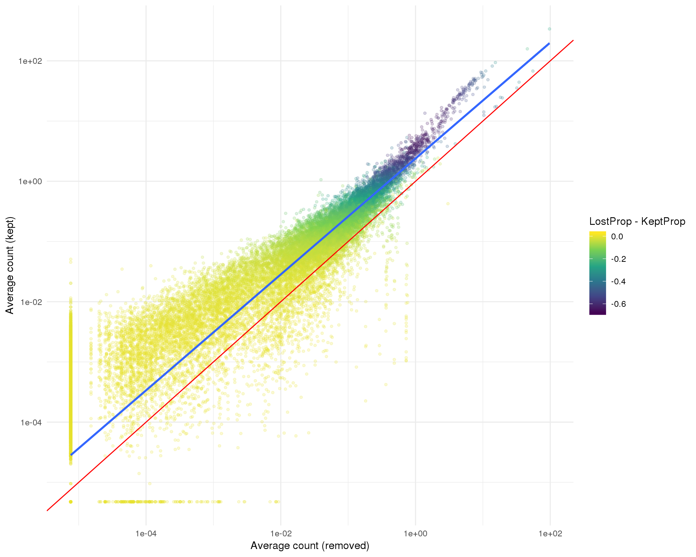
Expand here to see past versions of kept-lost-1.png:
| Version | Author | Date |
|---|---|---|
| 52e85ed | Luke Zappia | 2019-02-23 |
| 8f826ef | Luke Zappia | 2019-02-08 |
| 2daa7f2 | Luke Zappia | 2019-01-25 |
| 71b3dcc | Luke Zappia | 2019-01-23 |
kept_lost %>%
select(Gene, LogFC, Lost, LostProp, Kept, KeptProp) %>%
arrange(-LogFC) %>%
as.data.frame() %>%
head(100)Dimensionality reduction
Dimsionality reduction plots coloured by technical factors again gives us a good overview of the dataset.
PCA
plot_list <- lapply(names(dimred_factors), function(fct_name) {
plotPCA(filtered, colour_by = dimred_factors[fct_name],
shape_by = "Sample", add_ticks = FALSE) +
ggtitle(fct_name)
})
plot_grid(plotlist = plot_list, ncol = 2)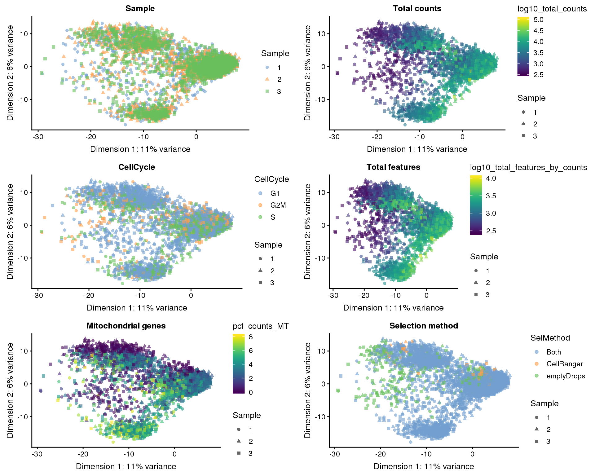
t-SNE
plot_list <- lapply(names(dimred_factors), function(fct_name) {
plotTSNE(filtered, colour_by = dimred_factors[fct_name],
shape_by = "Sample", add_ticks = FALSE) +
ggtitle(fct_name)
})
plot_grid(plotlist = plot_list, ncol = 2)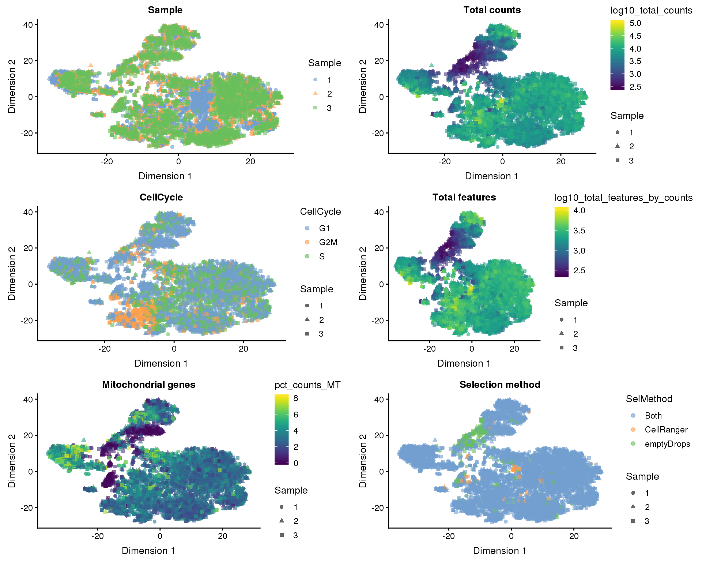
UMAP
plot_list <- lapply(names(dimred_factors), function(fct_name) {
plotUMAP(filtered, colour_by = dimred_factors[fct_name],
shape_by = "Sample", add_ticks = FALSE) +
ggtitle(fct_name)
})
plot_grid(plotlist = plot_list, ncol = 2)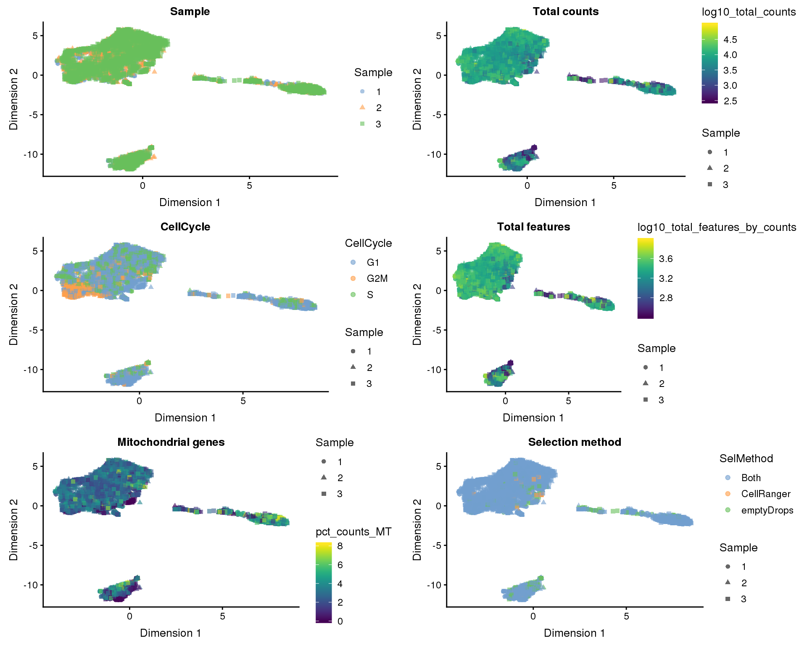
Figures
Thresholds
plot_data <- cell_data %>%
mutate(Kept = !(counts_out | features_out))
exp_plot <- ggplot(plot_data,
aes(x = log10_total_counts, y = log10_total_features_by_counts,
colour = Kept)) +
geom_point(alpha = 0.3) +
geom_vline(xintercept = counts_thresh, linetype = "dashed",
colour = "#8DC63F") +
annotate("text", x = counts_thresh, y = Inf,
label = paste(counts_mads, "MADs = ", round(counts_thresh, 2)),
angle = 90, vjust = -1, hjust = 1, colour = "#8DC63F") +
annotate("text", x = counts_thresh, y = Inf,
label = paste(sum(counts_out), "removed"),
angle = 90, vjust = 2, hjust = 1, colour = "#8DC63F") +
geom_hline(yintercept = features_thresh, linetype = "dashed",
colour = "#7A52C7") +
annotate("text", x = Inf, y = features_thresh,
label = paste(features_mads, "MADs = ", round(features_thresh, 2)),
vjust = -1, hjust = 1, colour = "#7A52C7") +
annotate("text", x = Inf, y = features_thresh,
label = paste(sum(features_out), "removed"),
vjust = 2, hjust = 1, colour = "#7A52C7") +
annotate("text", x = 4.5, y = 1,
label = paste(sum(!(counts_out | features_out)), "kept"),
vjust = -1, colour = "#00ADEF") +
annotate("text", x = 4.5, y = 1,
label = paste(sum((counts_out | features_out)), "removed"),
vjust = 1, colour = "#EC008C") +
scale_colour_manual(values = c("#EC008C", "#00ADEF"),
labels = c("Removed", "Kept")) +
ggtitle("Counts thresholds") +
xlab("Total counts (log10)") +
ylab("Total features (log10)") +
theme_minimal() +
theme(legend.position = "bottom",
legend.title = element_blank())
mt_plot <- ggplot(cell_data, aes(x = pct_counts_MT)) +
geom_histogram(bins = 100, fill = "#7A52C7") +
geom_vline(xintercept = mt_thresh, linetype = "dashed",
colour = "#EC008C") +
annotate("text", x = mt_thresh, y = Inf,
label = paste(mt_mads, "MADs = ", round(mt_thresh, 2), "%"),
angle = 90, vjust = -1, hjust = 1, colour = "#EC008C") +
annotate("text", x = mt_thresh, y = Inf,
label = paste(sum(mt_out), "removed"),
angle = 90, vjust = 2, hjust = 1, colour = "#EC008C") +
ggtitle("Mitochondrial percentage threshold") +
xlab("% counts mitochondrial") +
ylab("Number of cells") +
theme_minimal()
plot_data <- data.frame(Score = doublet_scores)
doublet_plot <- ggplot(plot_data, aes(x = Score)) +
geom_histogram(bins = 100, fill = "#7A52C7") +
geom_vline(xintercept = doublet_thresh, linetype = "dashed",
colour = "#EC008C") +
annotate("text", x = doublet_thresh, y = Inf,
label = paste("Threshold =", round(doublet_thresh, 2)),
angle = 90, vjust = -1, hjust = 1, colour = "#EC008C") +
annotate("text", x = doublet_thresh, y = Inf,
label = paste(sum(doublet_out), "removed"),
angle = 90, vjust = 2, hjust = 1, colour = "#EC008C") +
ggtitle("Doublet threshold") +
xlab("Doublet score") +
ylab("Number of cells") +
theme_minimal()
plot_data <- reducedDim(selected, "PCA_coldata") %>%
as.data.frame() %>%
mutate(Removed = "Kept") %>%
mutate(Removed = if_else(!kept_manual, "Manual", Removed),
Removed = if_else(!kept_pca, "PCA", Removed),
Removed = if_else(!kept_manual & !kept_pca, "Both", Removed)) %>%
mutate(Removed = factor(Removed, levels = c("Both", "Manual", "Kept"),
labels = c("Both", "Manual only", "Kept")))
pca_plot <- ggplot(plot_data, aes(x = PC1, y = PC2, colour = Removed)) +
geom_point(alpha = 0.3) +
scale_colour_manual(values = c("#F47920", "#00B7C6", "grey50"),
name = "Removed by") +
ggtitle("PCA based cell filtering") +
theme_minimal() +
theme(legend.position = "bottom")
fig <- plot_grid(exp_plot, mt_plot, doublet_plot, pca_plot,
ncol = 2, labels = "AUTO")
ggsave(here::here("output", DOCNAME, "qc-thresholds.pdf"), fig,
width = 7, height = 4, scale = 2)
ggsave(here::here("output", DOCNAME, "qc-thresholds.png"), fig,
width = 7, height = 4, scale = 2)
fig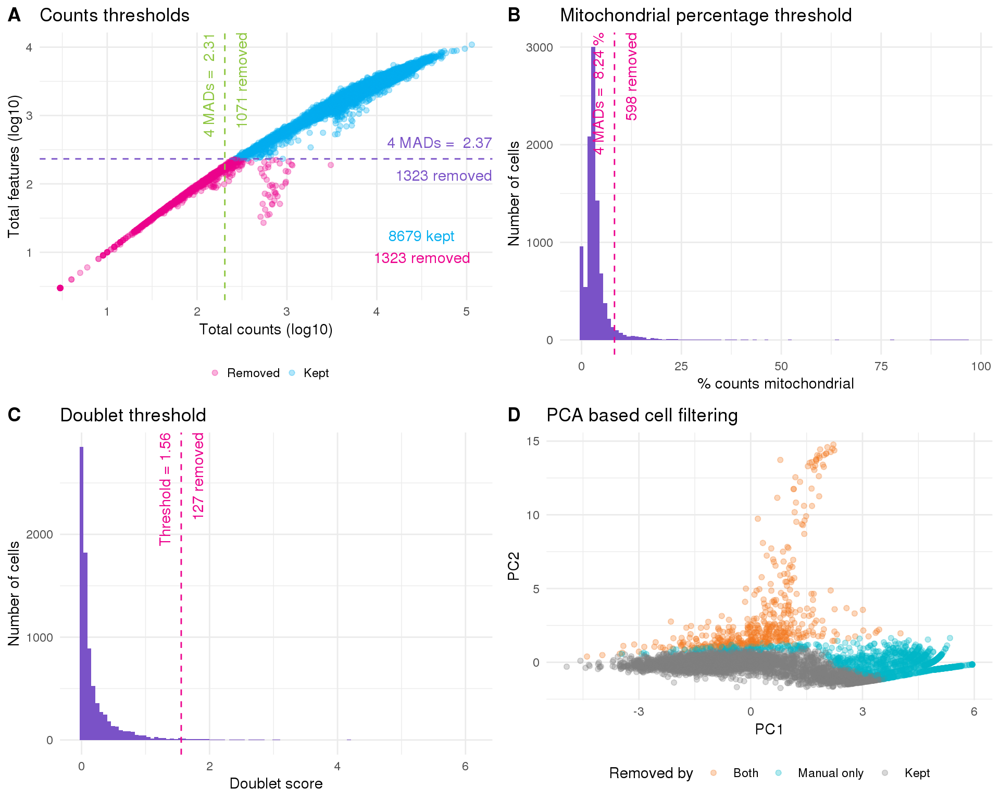
Expand here to see past versions of fig-thresholds-1.png:
| Version | Author | Date |
|---|---|---|
| 52e85ed | Luke Zappia | 2019-02-23 |
Validation
plot_data <- kept_lost %>%
mutate(Mean = 0.5 * (Lost + Kept),
Diff = Kept - Lost)
fc_plot <- ggplot(plot_data,
aes(x = Mean, y = LogFC, colour = LostProp - KeptProp)) +
geom_point(alpha = 0.3) +
geom_hline(yintercept = 0, colour = "red") +
scale_x_log10(labels = scales::number_format(accuracy = 0.0001)) +
scale_colour_viridis_c(
name = "Proportion expressed (Removed) - Proportion expressed (Kept)"
) +
ggtitle("Foldchange between removed and kept cells") +
xlab("0.5 * (Average expression (Kept) + Average expression (Removed))") +
ylab("Predicted log2 foldchange (Removed / Kept)") +
theme_minimal() +
theme(legend.position = "bottom")
fc_table <- kept_lost %>%
select(Gene, `Predicted foldchange (log2)` = LogFC) %>%
arrange(-`Predicted foldchange (log2)`) %>%
as.data.frame() %>%
head(15) %>%
tableGrob(rows = NULL, theme = ttheme_minimal())
plot_data <- reducedDim(filtered, "TSNE") %>%
as.data.frame() %>%
rename(TSNE1 = V1, TSNE2 = V2) %>%
mutate(
Sample = colData(filtered)$Sample,
`Total counts (log10)` = colData(filtered)$log10_total_counts,
`Cell cycle` = colData(filtered)$CellCycle,
`Total features (log10)` = colData(filtered)$log10_total_features_by_counts,
`% Mitochondrial` = colData(filtered)$pct_counts_MT,
`Selection method` = colData(filtered)$SelMethod
)
plot_list <- list(
ggplot(plot_data, aes(x = TSNE1, y = TSNE2, colour = Sample)) +
scale_colour_manual(values = c("#EC008C", "#00ADEF", "#8DC63F")) +
ggtitle("Sample"),
ggplot(plot_data, aes(x = TSNE1, y = TSNE2, colour = `Selection method`)) +
scale_colour_manual(values = c("#EC008C", "#00ADEF", "#8DC63F")) +
ggtitle("Selection method"),
ggplot(plot_data, aes(x = TSNE1, y = TSNE2, colour = `Cell cycle`)) +
scale_colour_manual(values = c("#EC008C", "#00ADEF", "#8DC63F")) +
ggtitle("Cell cycle stage"),
ggplot(plot_data, aes(x = TSNE1, y = TSNE2, colour = `Total counts (log10)`)) +
scale_colour_viridis_c() +
ggtitle("Total counts (log10)"),
ggplot(plot_data, aes(x = TSNE1, y = TSNE2, colour = `Total features (log10)`)) +
scale_colour_viridis_c() +
ggtitle("Total features (log10)"),
ggplot(plot_data, aes(x = TSNE1, y = TSNE2, colour = `% Mitochondrial`)) +
scale_colour_viridis_c() +
ggtitle("% Mitochondrial")
) %>%
lapply(function(x) {
x + geom_point(alpha = 0.3) +
theme_minimal() +
theme(legend.position = "bottom",
legend.title = element_blank())
})
tsne_plot <- plot_grid(plotlist = plot_list, ncol = 3)
p1 <- plot_grid(fc_plot, fc_table, ncol = 2, labels = "AUTO")
fig <- plot_grid(p1, tsne_plot, ncol = 1, labels = c("", "C"),
rel_heights = c(0.8, 1))
ggsave(here::here("output", DOCNAME, "qc-validation.pdf"), fig,
width = 7, height = 6, scale = 2)
ggsave(here::here("output", DOCNAME, "qc-validation.png"), fig,
width = 7, height = 6, scale = 2)
fig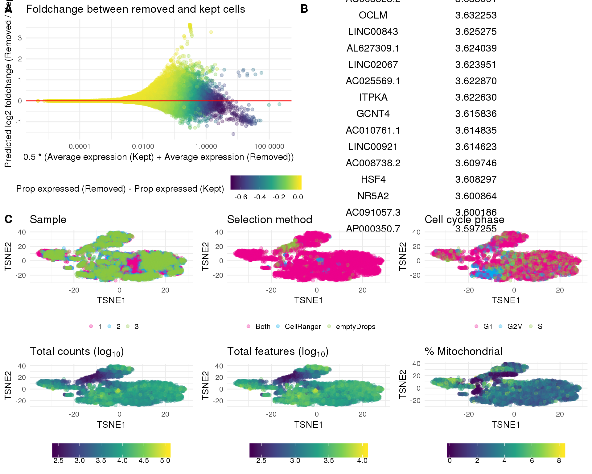
Expand here to see past versions of fig-validation-1.png:
| Version | Author | Date |
|---|---|---|
| 52e85ed | Luke Zappia | 2019-02-23 |
Summary
After quality control we have a dataset with 8059 cells and 22739 genes.
Parameters
This table describes parameters used and set in this document.
params <- list(
list(
Parameter = "counts_thresh",
Value = counts_thresh,
Description = "Minimum threshold for (log10) total counts"
),
list(
Parameter = "features_thresh",
Value = features_thresh,
Description = "Minimum threshold for (log10) total features"
),
list(
Parameter = "mt_thresh",
Value = mt_thresh,
Description = "Maximum threshold for percentage counts mitochondrial"
),
list(
Parameter = "doublet_thresh",
Value = doublet_thresh,
Description = "Maximum threshold for doublet score"
),
list(
Parameter = "counts_mads",
Value = counts_mads,
Description = "MADs for (log10) total counts threshold"
),
list(
Parameter = "features_mads",
Value = features_mads,
Description = "MADs for (log10) total features threshold"
),
list(
Parameter = "mt_mads",
Value = features_mads,
Description = "MADs for percentage counts mitochondrial threshold"
),
list(
Parameter = "min_count",
Value = min_count,
Description = "Minimum count per cell for gene filtering"
),
list(
Parameter = "min_cells",
Value = min_cells,
Description = "Minimum cells with min_count counts for gene filtering"
),
list(
Parameter = "n_cells",
Value = ncol(filtered),
Description = "Number of cells in the filtered dataset"
),
list(
Parameter = "n_genes",
Value = nrow(filtered),
Description = "Number of genes in the filtered dataset"
),
list(
Parameter = "median_genes",
Value = median(Matrix::colSums(counts(filtered) != 0)),
Description = paste("Median number of expressed genes per cell in the",
"filtered dataset")
),
list(
Parameter = "median_counts",
Value = median(Matrix::colSums(counts(filtered))),
Description = paste("Median number of counts per cell in the filtered",
"dataset")
)
)
params <- jsonlite::toJSON(params, pretty = TRUE)
knitr::kable(jsonlite::fromJSON(params))| Parameter | Value | Description |
|---|---|---|
| counts_thresh | 2.309 | Minimum threshold for (log10) total counts |
| features_thresh | 2.3659 | Minimum threshold for (log10) total features |
| mt_thresh | 8.2411 | Maximum threshold for percentage counts mitochondrial |
| doublet_thresh | 1.5572 | Maximum threshold for doublet score |
| counts_mads | 4 | MADs for (log10) total counts threshold |
| features_mads | 4 | MADs for (log10) total features threshold |
| mt_mads | 4 | MADs for percentage counts mitochondrial threshold |
| min_count | 1 | Minimum count per cell for gene filtering |
| min_cells | 2 | Minimum cells with min_count counts for gene filtering |
| n_cells | 8059 | Number of cells in the filtered dataset |
| n_genes | 22739 | Number of genes in the filtered dataset |
| median_genes | 2506 | Median number of expressed genes per cell in the filtered dataset |
| median_counts | 7838 | Median number of counts per cell in the filtered dataset |
Output files
This table describes the output files produced by this document. Right click and Save Link As… to download the results.
write_rds(filtered, here::here("data/processed/02-filtered.Rds"))dir.create(here::here("output", DOCNAME), showWarnings = FALSE)
readr::write_lines(params, here::here("output", DOCNAME, "parameters.json"))
knitr::kable(data.frame(
File = c(
getDownloadLink("parameters.json", DOCNAME),
getDownloadLink("qc-thresholds.png", DOCNAME),
getDownloadLink("qc-thresholds.pdf", DOCNAME),
getDownloadLink("qc-validation.png", DOCNAME),
getDownloadLink("qc-validation.pdf", DOCNAME)
),
Description = c(
"Parameters set and used in this analysis",
"Quality control thresholds figure (PNG)",
"Quality control thresholds figure (PDF)",
"Quality control validation figure (PNG)",
"Quality control validation figure (PDF)"
)
))| File | Description |
|---|---|
| parameters.json | Parameters set and used in this analysis |
| qc-thresholds.png | Quality control thresholds figure (PNG) |
| qc-thresholds.pdf | Quality control thresholds figure (PDF) |
| qc-validation.png | Quality control validation figure (PNG) |
| qc-validation.pdf | Quality control validation figure (PDF) |
{kind=link}
{kind=link}
Session information
devtools::session_info()─ Session info ──────────────────────────────────────────────────────────
setting value
version R version 3.5.0 (2018-04-23)
os CentOS release 6.7 (Final)
system x86_64, linux-gnu
ui X11
language (EN)
collate en_US.UTF-8
ctype en_US.UTF-8
tz Australia/Melbourne
date 2019-03-05
─ Packages ──────────────────────────────────────────────────────────────
! package * version date lib source
assertthat 0.2.0 2017-04-11 [1] CRAN (R 3.5.0)
backports 1.1.3 2018-12-14 [1] CRAN (R 3.5.0)
beeswarm 0.2.3 2016-04-25 [1] CRAN (R 3.5.0)
bindr 0.1.1 2018-03-13 [1] CRAN (R 3.5.0)
bindrcpp 0.2.2 2018-03-29 [1] CRAN (R 3.5.0)
Biobase * 2.42.0 2018-10-30 [1] Bioconductor
BiocGenerics * 0.28.0 2018-10-30 [1] Bioconductor
BiocNeighbors 1.0.0 2018-10-30 [1] Bioconductor
BiocParallel * 1.16.5 2019-01-04 [1] Bioconductor
bitops 1.0-6 2013-08-17 [1] CRAN (R 3.5.0)
broom 0.5.1 2018-12-05 [1] CRAN (R 3.5.0)
callr 3.1.1 2018-12-21 [1] CRAN (R 3.5.0)
cellranger 1.1.0 2016-07-27 [1] CRAN (R 3.5.0)
cli 1.0.1 2018-09-25 [1] CRAN (R 3.5.0)
colorspace 1.4-0 2019-01-13 [1] CRAN (R 3.5.0)
cowplot * 0.9.4 2019-01-08 [1] CRAN (R 3.5.0)
crayon 1.3.4 2017-09-16 [1] CRAN (R 3.5.0)
DelayedArray * 0.8.0 2018-10-30 [1] Bioconductor
DelayedMatrixStats 1.4.0 2018-10-30 [1] Bioconductor
desc 1.2.0 2018-05-01 [1] CRAN (R 3.5.0)
devtools 2.0.1 2018-10-26 [1] CRAN (R 3.5.0)
digest 0.6.18 2018-10-10 [1] CRAN (R 3.5.0)
dplyr * 0.7.8 2018-11-10 [1] CRAN (R 3.5.0)
dynamicTreeCut 1.63-1 2016-03-11 [1] CRAN (R 3.5.0)
edgeR * 3.24.3 2019-01-02 [1] Bioconductor
evaluate 0.12 2018-10-09 [1] CRAN (R 3.5.0)
forcats * 0.3.0 2018-02-19 [1] CRAN (R 3.5.0)
fs 1.2.6 2018-08-23 [1] CRAN (R 3.5.0)
generics 0.0.2 2018-11-29 [1] CRAN (R 3.5.0)
GenomeInfoDb * 1.18.1 2018-11-12 [1] Bioconductor
GenomeInfoDbData 1.2.0 2019-01-15 [1] Bioconductor
GenomicRanges * 1.34.0 2018-10-30 [1] Bioconductor
ggbeeswarm 0.6.0 2017-08-07 [1] CRAN (R 3.5.0)
ggplot2 * 3.1.0 2018-10-25 [1] CRAN (R 3.5.0)
git2r 0.24.0 2019-01-07 [1] CRAN (R 3.5.0)
glue 1.3.0 2018-07-17 [1] CRAN (R 3.5.0)
gridExtra * 2.3 2017-09-09 [1] CRAN (R 3.5.0)
gtable 0.2.0 2016-02-26 [1] CRAN (R 3.5.0)
haven 2.0.0 2018-11-22 [1] CRAN (R 3.5.0)
HDF5Array 1.10.1 2018-12-05 [1] Bioconductor
here 0.1 2017-05-28 [1] CRAN (R 3.5.0)
hms 0.4.2 2018-03-10 [1] CRAN (R 3.5.0)
htmltools 0.3.6 2017-04-28 [1] CRAN (R 3.5.0)
httr 1.4.0 2018-12-11 [1] CRAN (R 3.5.0)
igraph 1.2.2 2018-07-27 [1] CRAN (R 3.5.0)
IRanges * 2.16.0 2018-10-30 [1] Bioconductor
jsonlite 1.6 2018-12-07 [1] CRAN (R 3.5.0)
knitr 1.21 2018-12-10 [1] CRAN (R 3.5.0)
P lattice 0.20-35 2017-03-25 [5] CRAN (R 3.5.0)
lazyeval 0.2.1 2017-10-29 [1] CRAN (R 3.5.0)
limma * 3.38.3 2018-12-02 [1] Bioconductor
locfit 1.5-9.1 2013-04-20 [1] CRAN (R 3.5.0)
lubridate 1.7.4 2018-04-11 [1] CRAN (R 3.5.0)
magrittr 1.5 2014-11-22 [1] CRAN (R 3.5.0)
P Matrix 1.2-14 2018-04-09 [5] CRAN (R 3.5.0)
matrixStats * 0.54.0 2018-07-23 [1] CRAN (R 3.5.0)
memoise 1.1.0 2017-04-21 [1] CRAN (R 3.5.0)
modelr 0.1.3 2019-02-05 [1] CRAN (R 3.5.0)
munsell 0.5.0 2018-06-12 [1] CRAN (R 3.5.0)
P nlme 3.1-137 2018-04-07 [5] CRAN (R 3.5.0)
pillar 1.3.1 2018-12-15 [1] CRAN (R 3.5.0)
pkgbuild 1.0.2 2018-10-16 [1] CRAN (R 3.5.0)
pkgconfig 2.0.2 2018-08-16 [1] CRAN (R 3.5.0)
pkgload 1.0.2 2018-10-29 [1] CRAN (R 3.5.0)
plyr 1.8.4 2016-06-08 [1] CRAN (R 3.5.0)
prettyunits 1.0.2 2015-07-13 [1] CRAN (R 3.5.0)
processx 3.2.1 2018-12-05 [1] CRAN (R 3.5.0)
ps 1.3.0 2018-12-21 [1] CRAN (R 3.5.0)
purrr * 0.3.0 2019-01-27 [1] CRAN (R 3.5.0)
R.methodsS3 1.7.1 2016-02-16 [1] CRAN (R 3.5.0)
R.oo 1.22.0 2018-04-22 [1] CRAN (R 3.5.0)
R.utils 2.7.0 2018-08-27 [1] CRAN (R 3.5.0)
R6 2.3.0 2018-10-04 [1] CRAN (R 3.5.0)
Rcpp 1.0.0 2018-11-07 [1] CRAN (R 3.5.0)
RCurl 1.95-4.11 2018-07-15 [1] CRAN (R 3.5.0)
readr * 1.3.1 2018-12-21 [1] CRAN (R 3.5.0)
readxl 1.2.0 2018-12-19 [1] CRAN (R 3.5.0)
remotes 2.0.2 2018-10-30 [1] CRAN (R 3.5.0)
reshape2 1.4.3 2017-12-11 [1] CRAN (R 3.5.0)
rhdf5 2.26.2 2019-01-02 [1] Bioconductor
Rhdf5lib 1.4.2 2018-12-03 [1] Bioconductor
rlang 0.3.1 2019-01-08 [1] CRAN (R 3.5.0)
rmarkdown 1.11 2018-12-08 [1] CRAN (R 3.5.0)
rprojroot 1.3-2 2018-01-03 [1] CRAN (R 3.5.0)
rstudioapi 0.9.0 2019-01-09 [1] CRAN (R 3.5.0)
rvest 0.3.2 2016-06-17 [1] CRAN (R 3.5.0)
S4Vectors * 0.20.1 2018-11-09 [1] Bioconductor
scales 1.0.0 2018-08-09 [1] CRAN (R 3.5.0)
scater * 1.10.1 2019-01-04 [1] Bioconductor
scran * 1.10.2 2019-01-04 [1] Bioconductor
sessioninfo 1.1.1 2018-11-05 [1] CRAN (R 3.5.0)
SingleCellExperiment * 1.4.1 2019-01-04 [1] Bioconductor
statmod 1.4.30 2017-06-18 [1] CRAN (R 3.5.0)
stringi 1.2.4 2018-07-20 [1] CRAN (R 3.5.0)
stringr * 1.3.1 2018-05-10 [1] CRAN (R 3.5.0)
SummarizedExperiment * 1.12.0 2018-10-30 [1] Bioconductor
testthat 2.0.0 2017-12-13 [5] CRAN (R 3.5.0)
tibble * 2.0.1 2019-01-12 [1] CRAN (R 3.5.0)
tidyr * 0.8.2 2018-10-28 [1] CRAN (R 3.5.0)
tidyselect 0.2.5 2018-10-11 [1] CRAN (R 3.5.0)
tidyverse * 1.2.1 2017-11-14 [1] CRAN (R 3.5.0)
usethis 1.4.0 2018-08-14 [1] CRAN (R 3.5.0)
vipor 0.4.5 2017-03-22 [1] CRAN (R 3.5.0)
viridis 0.5.1 2018-03-29 [1] CRAN (R 3.5.0)
viridisLite 0.3.0 2018-02-01 [1] CRAN (R 3.5.0)
whisker 0.3-2 2013-04-28 [1] CRAN (R 3.5.0)
withr 2.1.2 2018-03-15 [1] CRAN (R 3.5.0)
workflowr 1.1.1 2018-07-06 [1] CRAN (R 3.5.0)
xfun 0.4 2018-10-23 [1] CRAN (R 3.5.0)
xml2 1.2.0 2018-01-24 [1] CRAN (R 3.5.0)
XVector 0.22.0 2018-10-30 [1] Bioconductor
yaml 2.2.0 2018-07-25 [1] CRAN (R 3.5.0)
zlibbioc 1.28.0 2018-10-30 [1] Bioconductor
[1] /group/bioi1/luke/analysis/phd-thesis-analysis/packrat/lib/x86_64-pc-linux-gnu/3.5.0
[2] /group/bioi1/luke/analysis/phd-thesis-analysis/packrat/lib-ext/x86_64-pc-linux-gnu/3.5.0
[3] /group/bioi1/luke/analysis/phd-thesis-analysis/packrat/lib-R/x86_64-pc-linux-gnu/3.5.0
[4] /home/luke.zappia/R/x86_64-pc-linux-gnu-library/3.5
[5] /usr/local/installed/R/3.5.0/lib64/R/library
P ── Loaded and on-disk path mismatch.This reproducible R Markdown analysis was created with workflowr 1.1.1